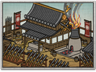

Basic Unit Statistics (can be modified by difficulty level, arts, skills, traits and retainers)
| Recruitment Cost | 1200 | |
| Upkeep Cost | 150 | |
| Melee Attack | 16 | 45% |
| Charge Bonus | 10 | 20% |
| Bonus vs Cavalry | 0 | 0% |
| Range | 125 | 19% |
| Accuracy | 70 | 70% |
| Reloading Skill | 35 | 35% |
| Ammunition | 15 | 18% |
| Melee Defence | 5 | 14% |
| Armour | 8 | 53% |
| Morale | 40 | 80% |
Strengths & Weaknesses
- Good range but shorter than bow units.
- Devastating damage.
- Very good accuracy and reload skill.
- Excellent morale.
- Vulnerable to cavalry but good in melee against infantry.
Abilities
- Bamboo Wall - A large wall that can be erected during the deployment phase. It blocks the movement of enemies and protects against cavalry charges.
- Fire by Rank - Will fire by rank from front to rear, each rank kneeling to reload and allowing those behind a clear field of fire.
- Rapid Volley - Temporarily increases a unit's rate of fire.
Requires
- Buildings: 
Description
Armed with a beautifully crafted gun, a hero puts his marksmanship to deadly use.
This hero and his entourage will give a good account of themselves if properly handled, and given a good field of fire. They can also defend themselves for a short time in melee. The matchlock's rate of fire may be slow but this is of little comfort when it is being fired, with deadly accuracy, by a hero. The small number of men in this unit means that they can be overwhelmed by weight of numbers in close combat. Heroic status is also no protection against the chance flight of arrows or bullets: if this unit is left exposed to enemy fire it will suffer as ordinary men do. Individual samurai carried firearms almost as soon as they became available from Portuguese traders. Guns from Europe were extremely expensive, and only the rich could possibly afford to carry one into battle. This meant that individual shooting and marksmanship had to be the order of the day. Smoothbore muskets are inherently inaccurate, but they are accurate enough to allow for properly aimed shots in the hands of experts, even if these don't always strike home. Japanese craftsmen certainly added foresights to gun barrels before Europeans bothered, and this would not have been done if aimed fire was considered pointless. Serious killing by gunfire, however, had to wait until guns were cheap enough to be issued to large formations.